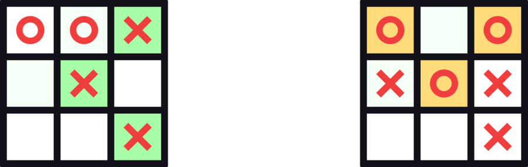
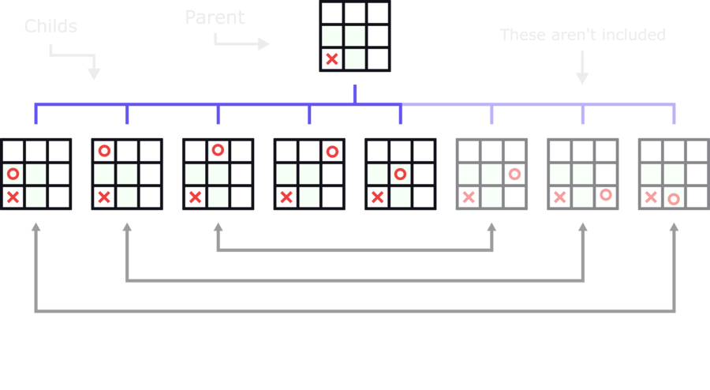
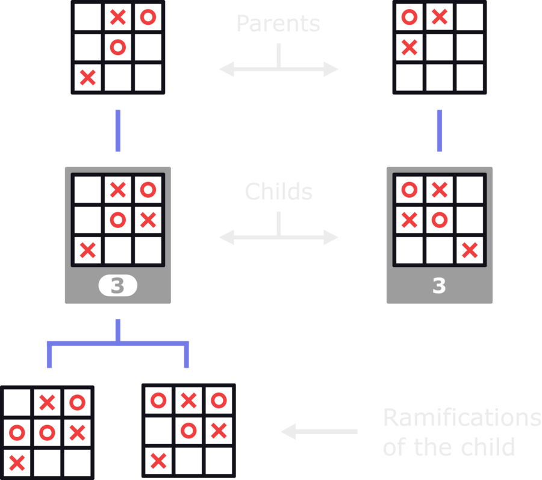

All possible combinations of plays in Tic Tac Toe
Published: February 18th, 2024
Updated: February 19th, 2024
Have you ever wondered how many different combinations of plays there are in tic tac toe?
I've created a map that displays all of them, with just 179 boards:
/Article-1/Map of all plays in Tic Tac Toe (svg).svg)
It includes all the ramifications of plays and every possible outcome in the game: each win, loss and tie... (or something similar to that).
Do you want to know how it works and how it was done?
In this article, I will explain this map and go through all the strategies and concepts applied to create it, showing you some cool game patterns along the way.
With this map and the information in this article, you will:
-
Gain insights into the logic of tic tac toe and many of its patterns.
-
Know how to make the best plays at any state of the game, never lose and win when it is possible.
Be able to choose the outcome you want in any game.
There is a free gift at the end of the article: File of the map in high definition and with extra data.
Concepts we will go through
-
Symmetry of the board: Rotations and reflections
Some plays are just rotated or reflected versions of other plays. Despite looking different, they are the same in terms of how they work strategically.
-
3 extra rules of play
To avoid including irrelevant or unnecesary plays in the map, I implemented 3 extra rules that both players must follow in each of their turns.
-
How to win in advance with double threats
Using double threats, players can force a future win, essentially winning 2 turns in advance.
-
All games end at the 7th turn
Here is a demonstration of how you can always know the result of a game at the 7th turn, as if it was the end of the game.
-
The only 3 states of tie
All ties are just rotated or mirrored version of 3 states of the board. Here you will see what these 3 states are.
-
Winning sequences
These sequences are another way of forcing a future win. Unlike double threats, winning sequences let the players secure wins 4 turns in advance.
Are you interested?
Let's get started.
Symmetry of the board: Rotations and reflections
I tried to avoid including unnecessary plays in the map and make it as compact as possible.
To do that, one of the things I did was apply the concept of board symmetry, with rotations and reflections.
It helped me to rule out at least 2 thirds (66%) of all the possible plays that I was contemplating at the moment.
Let me explain how it helped me:
With the board symmetry in mind, you will notice that, in some cases, even if two plays are made in different cells of the board, they are strategically identical.
In fact, they are just different versions of the same play: rotated or reflected versions.
Let’s put the first turn as an example: you may see that the board is empty and conclude that there are 9 different plays you can do, one for each empty cell. But many of those plays are just rotated or mirrored versions of each other.
In the first turn, playing in the top left corner is the same as playing in any other corner. The same applies to playing in the sides.
All the different versions of a play can be obtained by rotating or mirroring the board.
Every play has either 1, 2, 4 or 8 different versions of itself (rotated and or reflected):
/Article-1/versions-of-itself-1.webp)
I considered the different versions of the same play as repeated plays and didn't include them in the map.
When you have multiple plays that are rotated or mirrored versions of each other, their ramifications will also be rotated or mirrored versions of each other:
Why did I say that the concept of board symmetry helped me to rule out at least 2 thirds (66%) of all the possible plays I was contemplating?
Because, when making the map with all the ramifications of plays, instead of starting with 9 possibilities in the first turn, I started with 3: corner, side and center.
3 extra rules of play
When making the map of all possible plays, I implemented 3 extra rules that both players must follow in every turn.
These 3 rules narrow down the plays that the players can do by excluding those plays that are irrelevant or that would never be made in a serious game.
Examples 1 and 2 show some of these types of plays:
If a play goes against at least 1 of 3 rules, that play is not included in the map.
With this, I made the map more compact, only including relevant and important plays.
RULE 1 - If you can win, win.
This is the simplest rule.
If it is your turn and you are able to make a 3-in-a-row, you have to do it.
It makes no sense to not win when you can win.
RULE 2 - If there is a threat, block it.
Here we introduce the concept of threat.
By “threat” I mean a line (column, row or diagonal) with one empty cell and 2 cells occupied with the marks of the same player.
I call it “threat” because by making one you are threatening to win in the next turn.
After following the rule 1 without finding a possible win, look if there is a threat of your opponent. If there is one, block it by putting your mark in the empty cell of the line.
Not doing this will allow your opponent to win in their next turn, which also makes no sense.
RULE 3 - If you can force a future win, force it.
If you can’t make a 3-in-a-row and there is no opponent threat to block, then you have to check if there is a way for you to force a future win (a win that takes place in future turns).
In case you are able to force a win, you have to do it.
If you can force multiple wins, you have to go for the faster one, the one that takes less turns.
There are only two ways in which you can force a future win:
One way is by making double threats and the other one is by making winning sequences. These two concepts will be explained later in the article.
In the map, I signaled the cases where there is a forced win with a purple frame.
I didn’t signaled the cases where the player can’t avoid forcing a win to stop the opponent from making a 3-in-a-row. This is one of those cases:
If the player with X's hadn’t created a double threat, their opponent would have made a 3-in-a-row.
Following these rules would look like this:
The plays that don’t comply with even 1 of the 3 rules (for example, not making a 3-in-a-row when you can do it) aren’t included in the map of all possible combinations of plays.
With both players following this process, I made the map more compact and easy to read, while only including relevant plays.
How to win in advance with double threats
Double threats are one of the two strategies you can use to force a future win—as I mentioned in the 3rd rule of the 3 extra rules of play, above in the article.
You make double threats by creating 2 threats (explained in the 2nd rule of the 3 extra rules of play) in the same turn.
The opponent won’t be able to block both threats in their next turn, leaving you the possibility to make a 3-in-a-row.
Double threats must be created in a single turn.
If you try to make two threats in 2 turns, your opponent will have one turn in between to block the first threat, before you make the second one.
Your opponent should always block that first threat as long as they can’t make a 3-in-a-row (2nd rule of the 3 extra rules of play).
Also, the 2 lines of all double threats always share one cell: the cell where you played to make the double threat in one turn.
Making a double threat will inevitably lead to a win because the opponent won’t be able to block both threats at the same time.
If there is a double threat, the result of the game is already decided.
For that reason, I didn’t include the plays after double threats in the map.
CURIOUS QUESTION: Can you create a triple threat?
Sadly, “triple threats” aren’t possible. You can’t make more than 2 threats in one turn.
Why?
To have a triple threat on the board there must be 3 threats, which is the same as 3 lines, each with 2 of your marks and 1 empty cell.
Those 3 threats must have been created in one turn, so all the 3 lines share 1 cell occupied with your mark. Consequently, there have to be 4 of your marks (1 of the 4 marks being shared between the 3 lines).
To have 3 threats made in one turn, the board must have 3 empty cells and 4 cells occupied with your marks.
If you were playing with O’s, the other player must have the same amount of marks in the board as you.
This means that the board must have at least 4 cells occupied by you, 4 by your opponent and 3 empty cells. 11 cells in total, which is more than the 9 cells that the classic board has.
If you were playing with X’s, the other player must have at least 3 marks (4 minus 1) in the board.
There has to be at least 4 cells occupied by you, 3 by your opponent and 3 empty cells. 10 in total, which is also more than 9.
Either if you play with O’s or with X’s, the minimum amount of cells in the board needed to make 3 threats in one turn would be more than 9.
All victories are achieved through double threats
This is an important pattern in tic tac toe.
If both players follow the 3 extra rules of play, you will see that every victory is achieved by first making a double threat.
Here is a demonstration of why this occurs:
Let’s consider a hypothetical scenario where a victory has already been achieved, meaning there is a 3-in-a-row in the board and the game has ended.
You can imagine any board with a victory.
Now, Let's rewind the game by two turns to examine the board before the victory occurred.
The line of the board where previously was a 3-in-a-row, now has 1 empty cell and 2 cells with the marks of the future winner.
That is the definition of a threat: a line with 2 marks of the same player and one empty cell.
Because we went back 2 turns, now it would be the turn of the future losing player. But we know that they didn’t block the threat and their opponent made 3-in-a-row.
Why didn’t they block that threat?
There are only two alternatives:
-
The loser, unintentionally or intentionally, left a threat without blocking despite being able to do it.
-
The loser left a threat without blocking because there were multiple threats on the board and they couldn't block all in one turn.
The first alternative goes against the second rule of the 3 extra rules of play.
And we know that a player can't create more than 2 threats in one turn.
As a result, the only victories that appear in the map are those achieved through double threats.
In short: If there hadn't been a double threat before the 3-in-a-row, the player would have blocked the single threat, and nobody would have won.
All games end at the 7th turn (at most)
A classic game of tic tac toe has a maximum of 9 turns.
If both players follow the 3 extra rules of play, you can always know how the game will end at the 7th turn.
Essentially, you can treat the 7th turn as the end of the game.
Because of that, I didn’t include plays beyond the 7th turn in the map of all possible plays.
Let me explain how this works:
First, we have to consider that a game of tic tac toe can only have 1 of 2 results: a win and a loss or a tie.
Also, because all victories are preceded by a double threat (as I commented previously in the article), we can know if any player is going to win 2 turns before the 3-in-a-row occurs.
By knowing if there will be a win or not, we also know if there will be a tie or not.
Ultimately, you can always know the result of the game at least 2 turns before the end.
You only need to check if there is a double threat present in the board after the 7th play is done. If the 7th play is done and there is no double threat, nobody will win in that game.
In the map of all possible combinations of plays, if a game was going to end in a tie I just included the plays until the 6th turn.
I did this because you can already tell if it is possible to make a double threat in the 7th turn or not with 6 marks on the board.
The less plays I inlcude, the better.
The only 3 states of ties
Did you know? All ties are rotated or mirrored versions of the following boards:
These are the only ways in which you can fill the board without creating a 3-in-a-row.
Any variations on the distribution of the marks will result in a 3 in a row being created or in a rotated or mirrored version of one of the boards above.
Winning sequences
Making winning sequences is the second way of forcing a future win mentioned in the 3rd rule of the 3 extra rules of play.
These are sequences of plays that, unavoidably, lead to a double threat.
A winning sequence consists on a combination of threat + double threat.
With this, the players force their opponents into blocking a threat that enables them to make a double threat, achieving a victory.
It is basically a chain of forced moves for your opponent that ends in your victory.
In the map of all possible plays, you will see that players can only start winning sequences in the 3rd and 5th turn, with X’s, or the 4th turn, with O’s.
The trap ramification
In the map, there is one ramification that is different from all the others.
Usually, if you make a play and your opponent can’t force a win in the next turn, you at least have the chance to tie.
However, if you are playing with O's and enter this ramification, even if your opponent doesn't force a win right away, all the outcomes are losses for you.
This is the ramification:
This is the only ramification without any ties in it’s outcomes.
If you are playing with O's, never play into that ramification, or you will definitely lose.
Using forced plays to reduce the amount of boards in the map
When making the map of all possible plays, there were cases in which, instead of just adding 1 play per board, I could add 2, reducing the amount of boards needed to show all possible plays.
In these cases, the players are forced to do an specific play by The 3 extra rules of play. Examples are:
-
When the opponent makes a threat - The player is forced to block that threat.
-
When it is possible to make a double threat - If there is no threat to block, the player is forced to make the double threat.
-
When it is possible to make a winning sequence - If there is no threat to block and can’t make a double threat, the player has to make the winning sequence.
This allowed me to make the map more compact, using less boards when the players are forced to do one play.
Some clarifications about the map
-
The wins are colored with green, for the player with X’s, and yellow, for the player with O’s. They aren’t the wins themselves (3-in-a-row), but the double threats that force the wins (explained in How to win in advance with double threats)
 -
When a play and it’s rotated / mirrored version (explained in Symmetry of the board: rotations and reflections) are “childs” of the same “parent” in the tree of possibilites, the rotated / mirrored version isn’t included in the map.
 -
When a play and it’s rotated / mirrored version are “childs” of different “parents” in the tree of possibilites, both are included and signaled with a gray frame and a number to recognize their relationship. Only one of the versions shows its ramifications.

The end
Congratulations for reaching the end of the article!
Enjoy the free gift:
/articleCard1(6).webp)
/Article-1/Map with extra data.webp){kind=link}
Even though tic tac toe may be considered a simple game, there is a lot more to it than just placing circles and crosses in a 3 x 3 board until someone makes a 3-in-a-row.
At this point, you not only know about many patterns, concepts and strategies of the game, but you also understand better the map with all its possible combinations of plays.
You can see how many different combinations of plays there are in the game and how to reach each one of them.
Every win, loss and tie is there for you to analyze.
Keep exploring the logic behind tic tac toe!
Did you already know the patterns and strategies mentioned in this article? Have you found some other interesting information that I didn’t include here?
Let me know any thoughts you have by leaving a comment below!